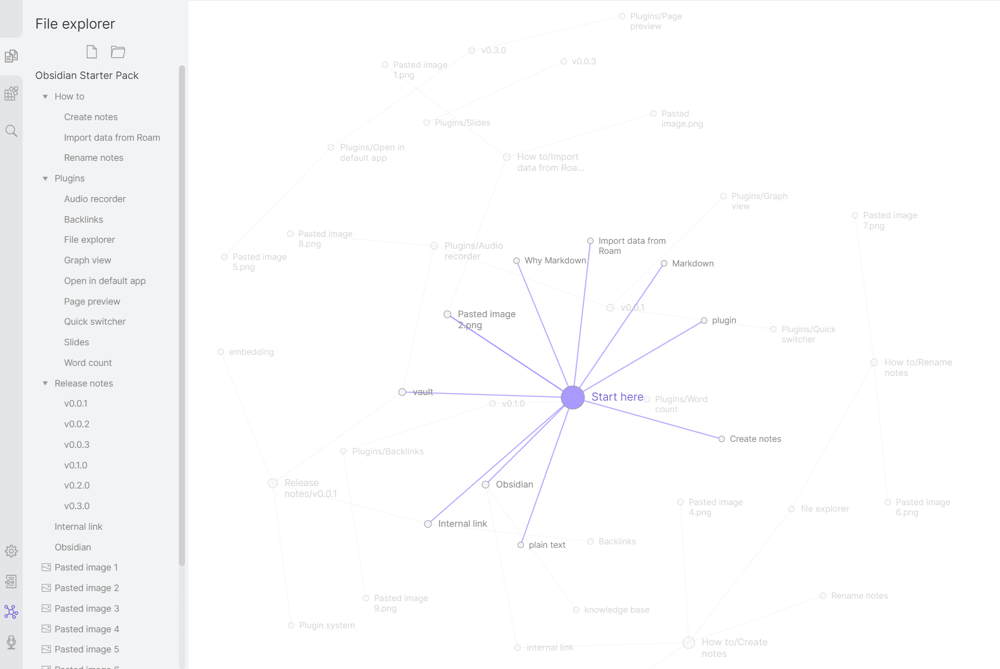
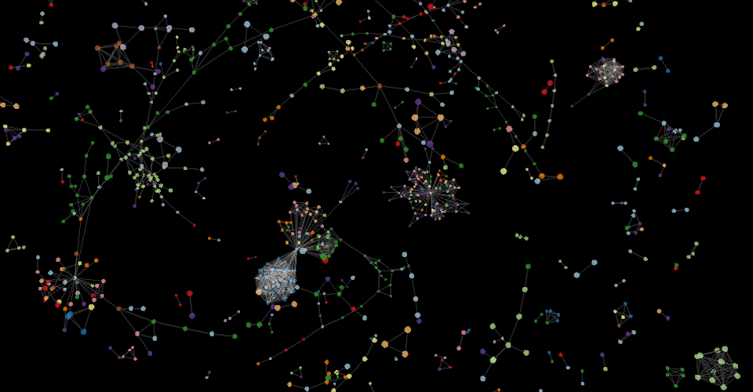

01 · Obsidian Graph view

전체 연결망, 선택 주변 연결 강조, Local Graph의 탐색 맥락을 참고합니다. 이 화면은 2D이며 3D 전환 예시는 아닙니다.
공식 조작 설명 ↗ · 원문·출처 ↗공식 공개 화면 원본입니다. 아래 서비스·라이브러리의 화면을 Universe 제안 시안과 구분합니다.

전체 연결망, 선택 주변 연결 강조, Local Graph의 탐색 맥락을 참고합니다. 이 화면은 2D이며 3D 전환 예시는 아닙니다.
공식 조작 설명 ↗ · 원문·출처 ↗
회전·원근·공간 이동과 선택 노드로의 카메라 접근을 참고합니다. 완성된 지식관리 서비스가 아닌 3D 시각화 라이브러리의 실제 예제입니다.
직접 회전·확대하는 데모 ↗공식 화면·설명·예제 소스 확인일: 2026-11-05. 외부 데모는 이 환경에서 직접 실행 검증하지 않았습니다. 타사 자료는 검토 참고용이며 앱 번들에 포함하지 않습니다.